Servlet Basics
The goal of this lab is to exercise basic features of Servlet
leveraging NetBeans IDE.
You are going to build, run, and modify ServletExamples sample
application using NetBeans.
Expected duration: 60 minutes
(excluding homework)
Software Needed
Before you begin, you need to install JDK 6 and NetBeans IDE
(or later version) as
described here. You also need to download and unzip the
hands-on lab zip file below.
- 4002_servletbasics.zip (download)
- The zip file contains this document and the lab contents
- Download it and unzip in a directory of your choice
OS platforms you can use
- Windows
- Solaris x86, Solaris Sparc
- Linux
- Mac OS X
Change Log
- Oct. 12th, 2006: Homework is added
- Nov. 3rd, 2006: The hyperlink to J2EE 1.4 JavaDoc is corrected
- April 9th, 2008: NetBeans 6.0 is used
- June 10th, 2008: NetBeans 6.1 is used
- Aug. 5th, 2009: Tested with NetBeans 6.7.1
- Feb. 21st, 2010: Tested with NetBeans 6.8, ServletExamples is
provided under Samples
Lab Exercises
Exercise 1: Build and run HelloWorld
Servlet Application
In this exercise, you are going to open
"hello2" NetBeans project, which is provided as part of the hands-on
lab zip file.
(1.1)
Open, build, and run "hello2" sample Servlet application
0. Start NetBeans IDE.
1. Open hello2
NetBeans project.
- Select File->Open Project (Ctrl+Shift+O).
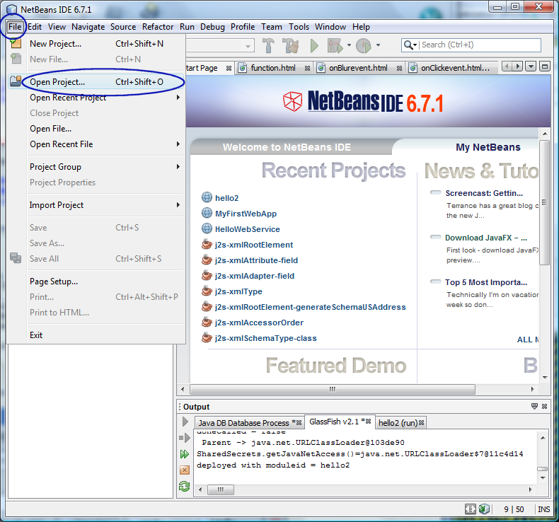
- The Open Project dialog
box appears.
- Browse down to <LAB_UNZIPPED_DIRECTORY>/servletbasics/samples
directory.
- Windows: If you unzipped the 4002_servletbasics.zip
file under
C:\
directory, the directory to which you want
to browse down should be C:\servletbasics\samples.
- Solaris/Linux: If you
unzipped the 4002_servletbasics.zip
file under $HOME
directory, the directory to which you want
to browse down should be $HOME/servletbasics/samples.
- Select hello2.
- Click Open Project.
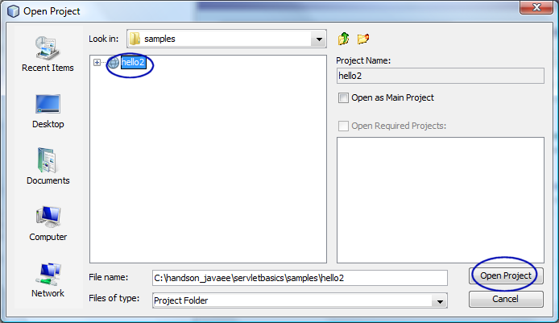
- The hello2
project node appears under Projects tab
window.
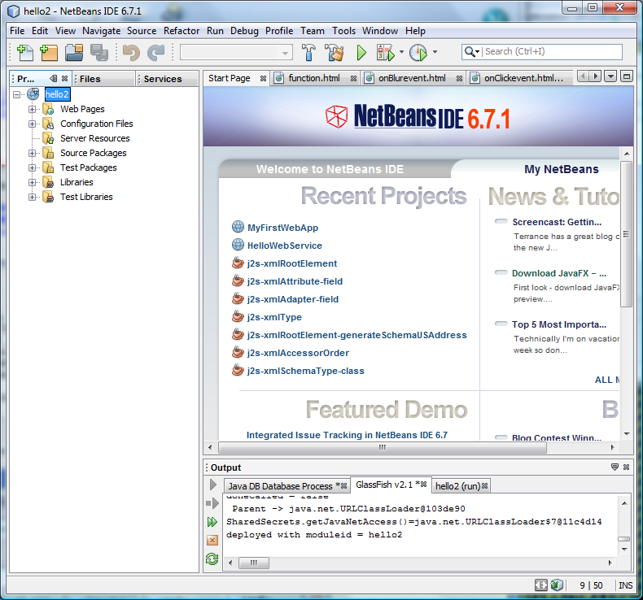
2 Build and run hello2 project.
- Right-click hello2
project and select Run.
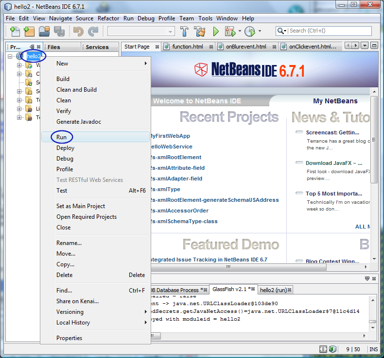
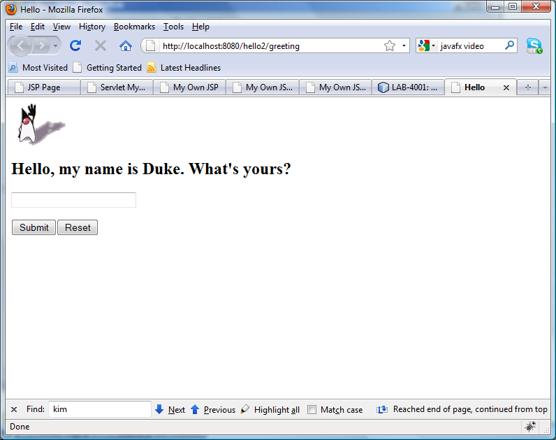
Figure-1.12: Running hello2 project
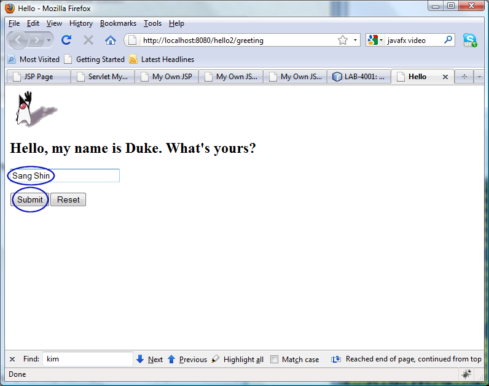
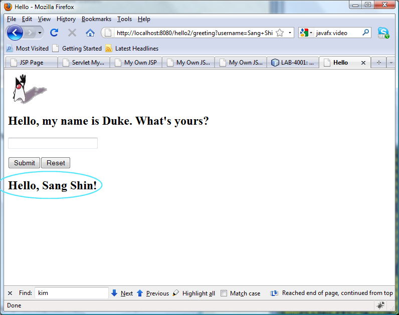
(1.2)
Modify the application to display hobby
In this step, you are going to modify
the application to ask a hobby of a user and then redisplay it.
1. Double click
GreetingServlet.java
under
hello2->Source
Packages->servlets
to open in the source editor.
2. Modify
GreetingServlet.java as
shown in Code-1.13 below.
package servlets;
import java.io.*;
import java.util.*;
import java.sql.*;
import javax.servlet.*;
import javax.servlet.http.*;
/**
* This is a simple example of an HTTP Servlet. It responds
to the GET
* method of the HTTP protocol.
*/
public class GreetingServlet extends HttpServlet {
public void doGet(HttpServletRequest request,
HttpServletResponse response)
throws ServletException, IOException {
response.setContentType("text/html");
response.setBufferSize(8192);
PrintWriter out =
response.getWriter();
// then write the data of
the response
out.println("<html>" +
"<head><title>Hello</title></head>");
// then write the data of
the response
out.println("<body
bgcolor=\"#ffffff\">" +
"<img src=\"duke.waving.gif\" alt=\"Duke waving\">" +
"<h2>Hello,
my name is Duke. My hobby is Golf. What are your name and hobby?</h2>"
+
"<form method=\"get\">" +
"<input type=\"text\" name=\"username\" size=\"25\">" +
"<p></p>" +
"<input
type=\"text\" name=\"hobby\" size=\"25\">" + "<p></p>" +
"<input type=\"submit\" value=\"Submit\">" +
"<input type=\"reset\" value=\"Reset\">" + "</form>");
String username =
request.getParameter("username");
if ((username != null)
&& (username.length() > 0)) {
RequestDispatcher dispatcher =
getServletContext()
.getRequestDispatcher("/response");
if
(dispatcher != null) {
dispatcher.include(request, response);
}
}
out.println("</body></html>");
out.close();
}
public String getServletInfo() {
return "The Hello servlet
says hello.";
}
}
|
Code-1.13: Modified GreetingServlet.java
3. Modify
ResponseServlet.java
under
hello2->Source
Packages->servlets as shown in Code-1.14 below.
package servlets;
import java.io.*;
import java.util.*;
import java.sql.*;
import javax.servlet.*;
import javax.servlet.http.*;
/**
* This is a simple example of an HTTP Servlet. It responds
to the GET
* method of the HTTP protocol.
*/
public class ResponseServlet extends HttpServlet {
public void doGet(HttpServletRequest request,
HttpServletResponse response)
throws ServletException, IOException {
PrintWriter out =
response.getWriter();
// then write the data of
the response
String username =
request.getParameter("username");
if ((username != null)
&& (username.length() > 0)) {
out.println("<h2>Hello, " + username + "!</h2>");
}
String hobby =
request.getParameter("hobby");
if ((hobby != null) && (hobby.length() > 0)) {
out.println("<h2>Your hobby is " + hobby + "!</h2>");
}
}
public String getServletInfo() {
return "The Response servlet
says hello.";
}
}
|
Code-1.14: Modified ResponseServlet.java
4. Right-click
hello2
project and select
Run.
This will compile the servlet code, create a hello2.war file, deploys
it on a deployment platform (GlassFish v2 in this case) and then pop up
a
browser to access it.
5. Type in a name and hobby into the blank fields. Clock
Submit button.
6. Observe the name and hobby you typed are displayed. (Figure-1.15
below)
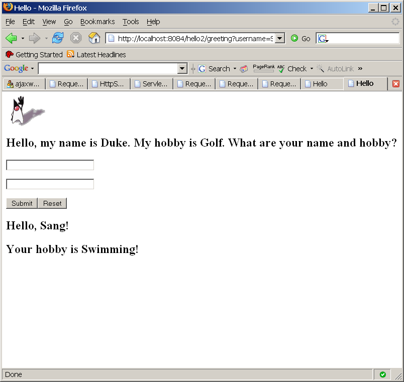
Figure-1.15: Result of running the application
(1.3)
Display context sensitive Javadoc on Java EE class
1. Right click HttpServlet and select Show Javadoc.
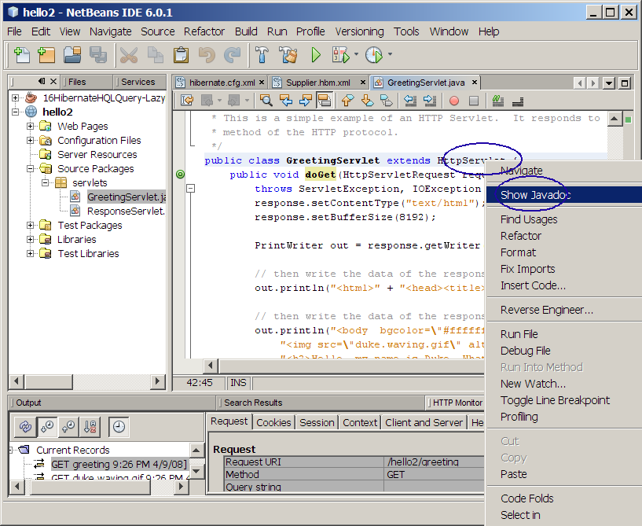
Figure-1.31: Show Javadoc
2. Observe that the Javadoc of the HttpServlet gets displayed.
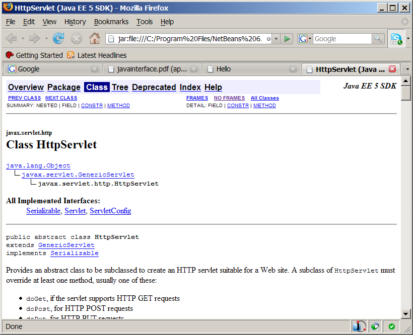
Figure-1.32: Javadoc of HttpServlet
Summary
In this exercise, you have built
and run a simplest possible Web application that contains two servlets.
return to the top
Exercise 2: Build and run "Servlet
Examples" sample
application
In this exercise, you are going to build
and run "ServletExamples"
sample application that comes with
NetBeans.
(2.1)
Build and run "Servlet Examples" sample application
1. Open
ServletExamples
NetBeans project (that is provided as part of hands-on lab zip file).
- Select File->Open Project (Ctrl+Shift+O).
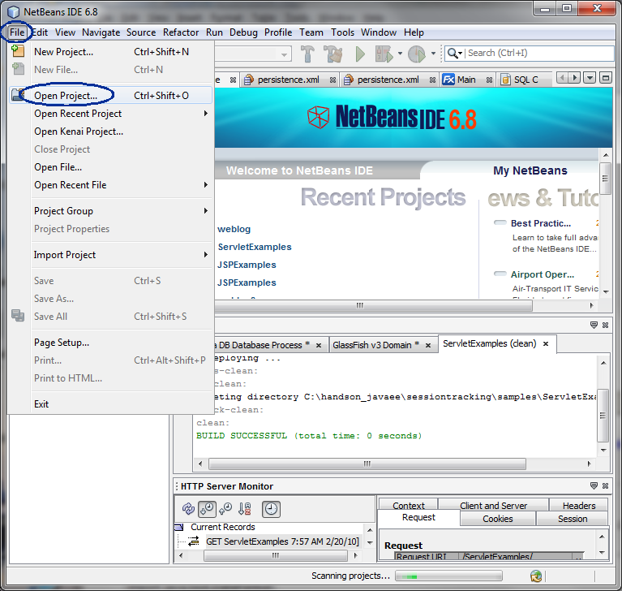
- The Open Project dialog
box appears.
- Browse down to <LAB_UNZIPPED_DIRECTORY>/servletbasics/samples
directory.
- Windows: If you unzipped the 4002_servletbasics.zip
file under
C:\
directory, the directory to which you want
to browse down should be C:\servletbasics\samples.
- Solaris/Linux: If you unzipped the 4002_servletbasics.zip
file under $HOME
directory, the directory to which you want
to browse down should be $HOME/servletbasics/samples.
- Select ServletExamples.
- Click Open Project.
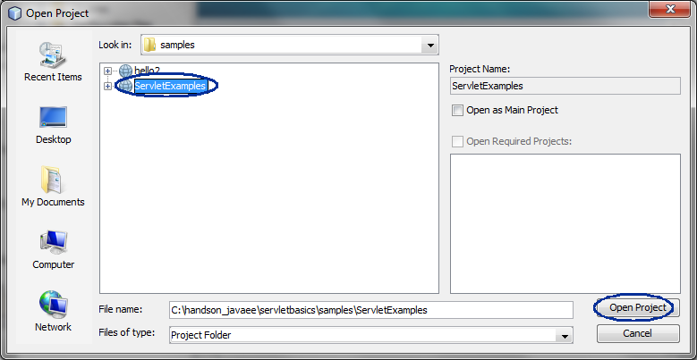
- Observe that the ServletExamples
project node appears under Projects tab
window.
2. Build and run the project.
- Right click ServletExamples project
node and select Run.
- Observe that the browser gets displayed.
- Click Execute to
execute
the "Hello World" servlet code.
(Figure-2.12 below)
- Click Source to see the
corresponding source code. (Figure-2.12 below)
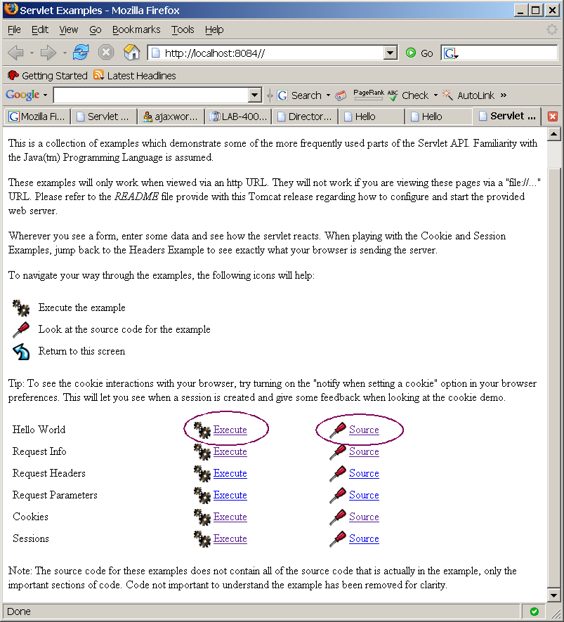
Figure-2.12: ServletExamples application
7. Try to execute and see the sources of
Request Info,
Request Headers and
Request Parameters.
(2.2)
Modify "Hello World" part of the application
1. Modify
HelloWorldExample.java
under
ServletExamples->Source
Packages-><default package> as shown in Code-2.20
below. The code fragments that need to be added are highlighted
in
bold and
blue colored font.
public class HelloWorldExample
extends HttpServlet {
public void doGet(HttpServletRequest request,
HttpServletResponse response)
throws IOException,
ServletException
{
ResourceBundle rb =
ResourceBundle.getBundle("LocalStrings",request.getLocale());
response.setContentType("text/html");
PrintWriter out =
response.getWriter();
out.println("<html>");
out.println("<head>");
String title =
rb.getString("helloworld.title");
out.println("<title>" +
title + "</title>");
out.println("</head>");
out.println("<body
bgcolor=\"white\">");
// note that all links are created to be relative.
this
// ensures that we can move the web application that
this
// servlet belongs to to a different place in the url
// tree and not have any harmful side effects.
// XXX
// making these absolute
till we work out the
// addition of a PathInfo
issue
out.println("<a
href=\"../helloworld.html\">");
out.println("<img
src=\"../images/code.gif\" height=24 " +
"width=24 align=right border=0 alt=\"view code\"></a>");
out.println("<a
href=\"../index.html\">");
out.println("<img
src=\"../images/return.gif\" height=24 " +
"width=24 align=right border=0 alt=\"return\"></a>");
out.println("<h1>" +
title + "</h1>");
out.println("my
own message gets displayed here");
out.println("</body>");
out.println("</html>");
}
}
|
Code-2.20: Modified HelloWorldExample.java
2. Right click
ServletExamples project
node and select
Run.
3. Click
Execute to execute
the "
Hello World" servlet code.
4. Observe that the browser gets displayed as shown in Figure-2.21
below.
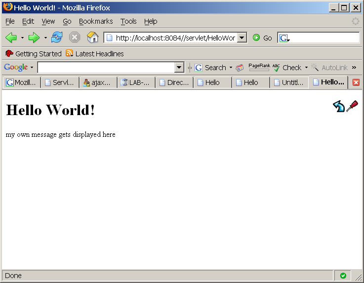
Figure-2.21: Result of running the application
(2.3)
Modify "Request Info" Example part of the application
In this step, you are going to display various information of
the
HttpRequest object, which
reflects Http Request from the client.
1. Move your cursor to the
HttpServletRequest
string and right click and select
Show Javadoc. (Figure-2.30 below)
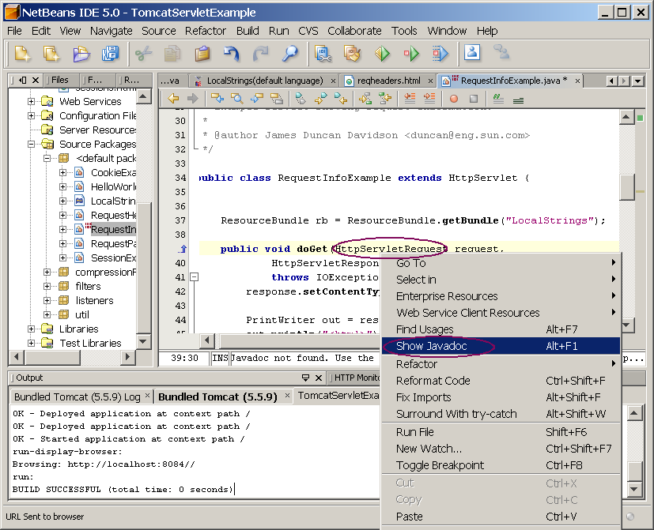
Figure-2.30: Show Javadoc of HttpServletRequest
2. The JavaDoc of the
HttpServletRequest
class gets displayed in a browser. (Figure-2.31 below)
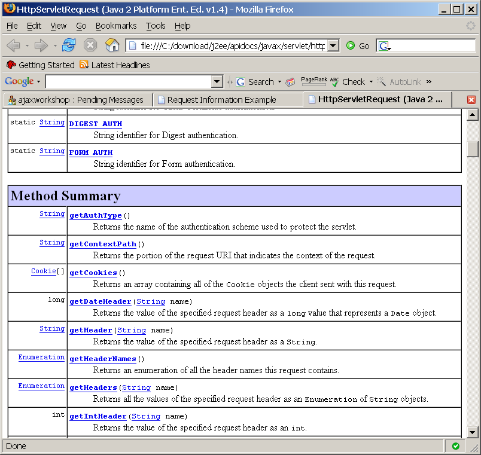
Figure-2.31: Javadoc of HttpServletRequest
3. Modify
RequestInfoExample.java
under
ServletExamples->Source
Packages-><default package> as shown in Code-2.32
below. The code fragments that need to be added are highlighted
in
bold and
blue colored font.
import java.io.*;
import java.text.*;
import java.util.*;
import javax.servlet.*;
import javax.servlet.http.*;
import util.HTMLFilter;
/**
* Example servlet showing request information.
*
* @author James Duncan Davidson <duncan@eng.sun.com>
*/
public class RequestInfoExample extends HttpServlet {
ResourceBundle rb =
ResourceBundle.getBundle("LocalStrings");
public void doGet(HttpServletRequest request,
HttpServletResponse response)
throws IOException, ServletException {
response.setContentType("text/html");
PrintWriter out =
response.getWriter();
out.println("<html>");
out.println("<body>");
out.println("<head>");
String title =
rb.getString("requestinfo.title");
out.println("<title>"
+ title + "</title>");
out.println("</head>");
out.println("<body
bgcolor=\"white\">");
// img stuff not req'd for
source code html showing
// all links relative!
// XXX
// making these absolute
till we work out the
// addition of a PathInfo
issue
out.println("<a
href=\"../reqinfo.html\">");
out.println("<img
src=\"../images/code.gif\" height=24 " +
"width=24 align=right border=0 alt=\"view code\"></a>");
out.println("<a
href=\"../index.html\">");
out.println("<img
src=\"../images/return.gif\" height=24 " +
"width=24 align=right border=0 alt=\"return\"></a>");
out.println("<h3>" +
title + "</h3>");
out.println("<table
border=0><tr><td>");
out.println(rb.getString("requestinfo.label.method"));
out.println("</td><td>");
out.println(request.getMethod());
out.println("</td></tr><tr><td>");
out.println(rb.getString("requestinfo.label.requesturi"));
out.println("</td><td>");
out.println(HTMLFilter.filter(request.getRequestURI()));
out.println("</td></tr><tr><td>");
out.println(rb.getString("requestinfo.label.protocol"));
out.println("</td><td>");
out.println(request.getProtocol());
out.println("</td></tr><tr><td>");
out.println(rb.getString("requestinfo.label.pathinfo"));
out.println("</td><td>");
out.println(HTMLFilter.filter(request.getPathInfo()));
out.println("</td></tr><tr><td>");
out.println(rb.getString("requestinfo.label.remoteaddr"));
String cipherSuite=
(String)request.getAttribute("javax.servlet.request.cipher_suite");
out.println("</td><td>");
out.println(request.getRemoteAddr());
out.println("</table>");
// Display authentication
type
out.println("<h3>
AuthType </h3>");
out.println("AuthType = " +
request.getAuthType());
// Display HTTP method
out.println("<h3> HTTP
Method </h3>");
out.println("HTTP Method = "
+
request.getMethod());
if(cipherSuite!=null){
out.println("</td></tr><tr><td>");
out.println("SSLCipherSuite:");
out.println("</td>");
out.println("<td>");
out.println(request.getAttribute("javax.servlet.request.cipher_suite"));
out.println("</td>");
}
}
public void doPost(HttpServletRequest request,
HttpServletResponse response)
throws IOException, ServletException {
doGet(request, response);
}
}
|
Code-2.32: Modified RequestInfoExample.java
4. Right click
ServletExamples project
node and select
Run.
5. Click
Execute to execute
the "
Request Info" servlet code.
6. Observe that the browser gets displayed as shown in Figure-2.33
below.
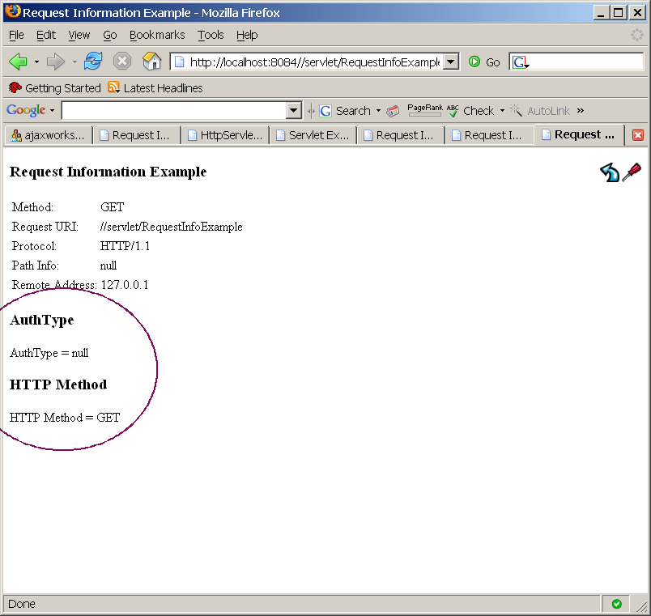
Figure-2.33: Result of running the application
Summary
In this exercise, you have built and run
"ServletExampless" sample application.
return to the top
Homework Exercise (for people who
are taking Sang Shin's "Java EE Programming online course")
1.
The homework is to modify the hello2 project as described below. (You
might want to create a new project by copying
the hello2
project.) You can name
the
homework project in any way you want
but here I am going to call it Myhello2.
- Modify GreetingServlet.java
and ResponseServlet.java to add
another
information such as Birth Place.
2
. Send the following files to
j2eehomeworks@javapassion.com
with Subject
as J2EEHomework-servletbasics.
- Zip file of the the Myhello2
NetBeans project. (Someone else
should be able to open and run it as a NetBeans project.) You can
use your favorite zip utility or you can use "jar" utility that comes
with JDK as following.
- cd <parent directory that contains Myhello2 directory>
(assuming you named your project as Myhello2)
- jar cvf Myhello2.zip Myhello2 (Myhello2
should contain nbproject
directory)
- Captured output screen -
name it as J2EEHomework-servletbasics.gif
orJ2EEHomework-servletbasics.jpg (or J2EEHomework-servletbasics.<whatver
graphics format>)
- Any screen capture that shows that your program is working is
good enough.
- If you decide to use
different IDE other than NetBeans, the zip
file should contain all the files that are needed for rebuilding the
project - war file with necessary source files is OK.
return
to the top